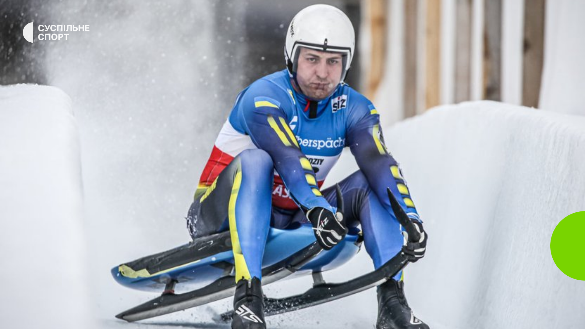
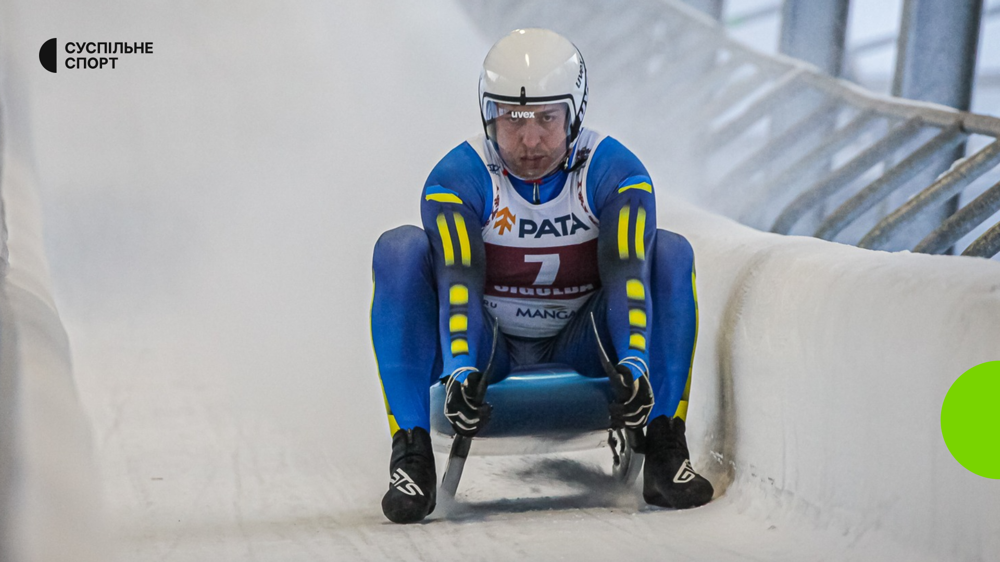
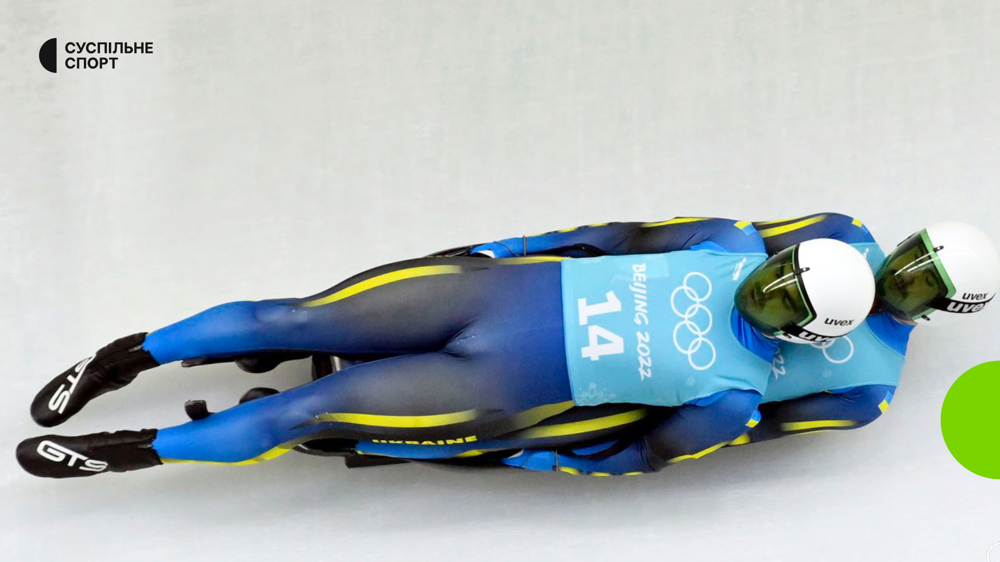
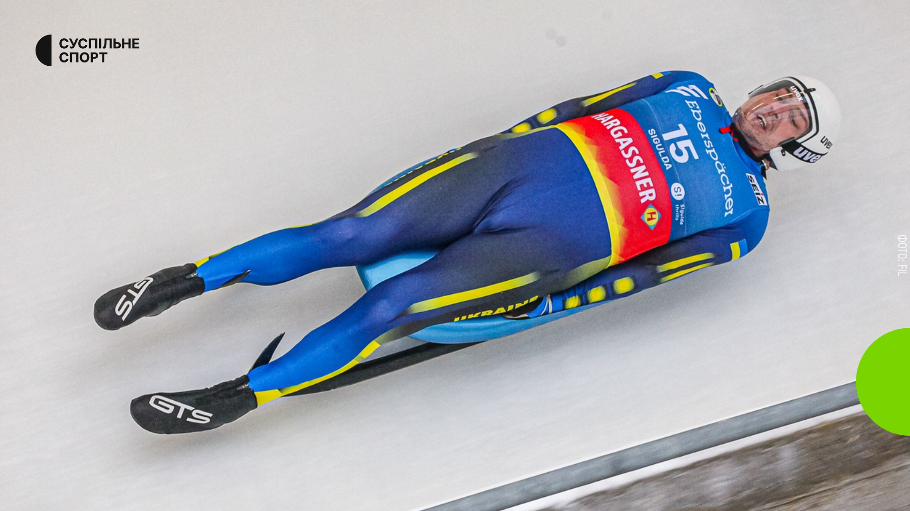
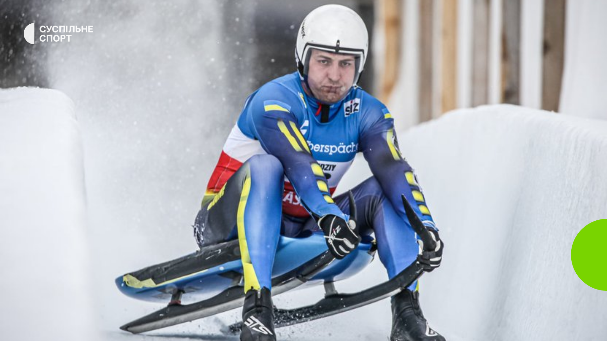
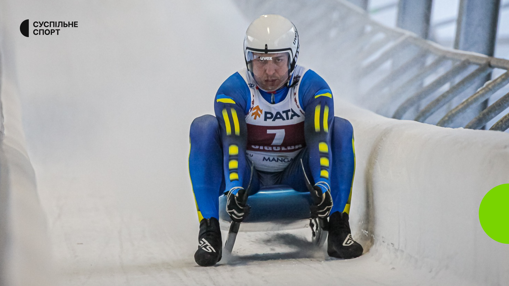
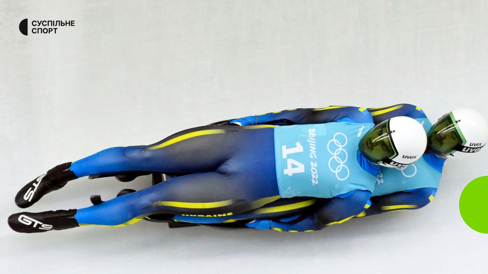
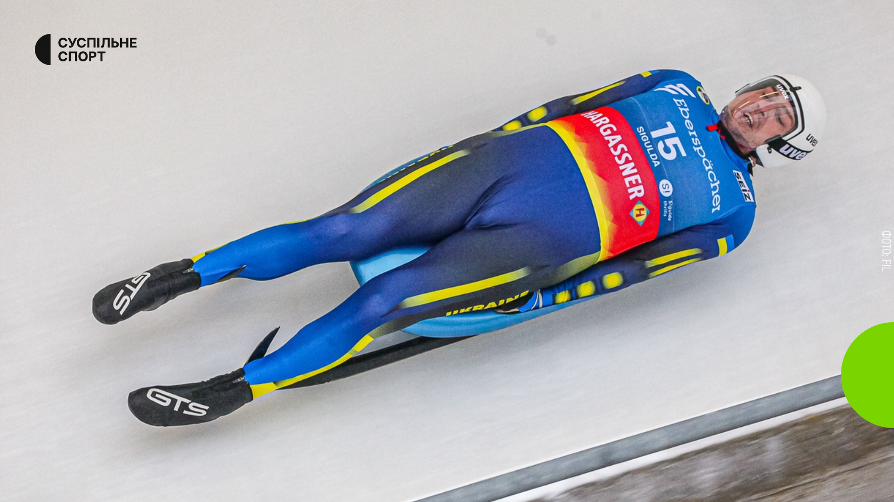
⬆
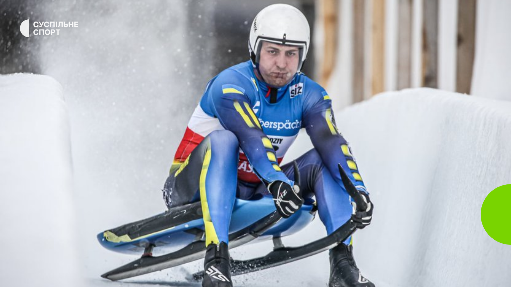
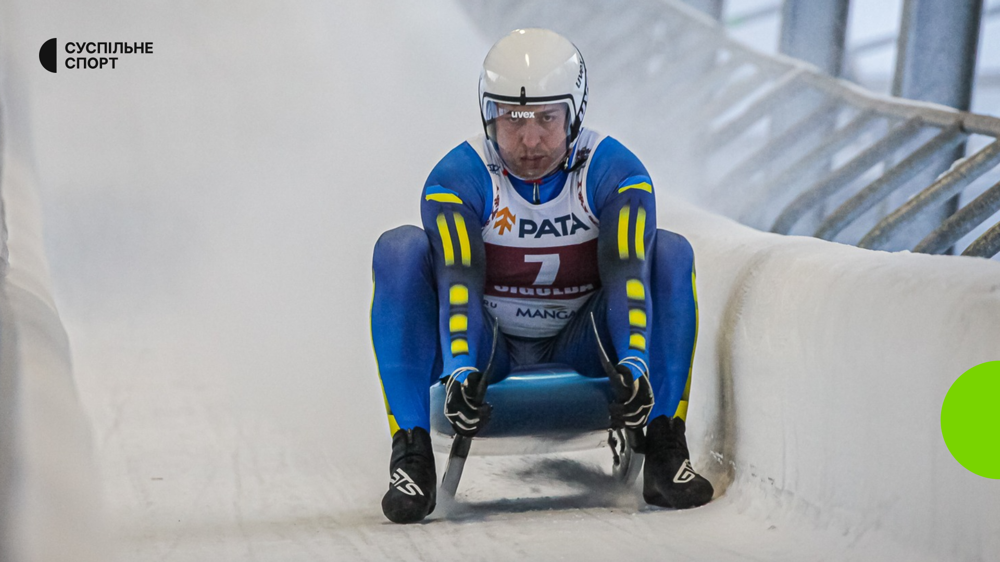
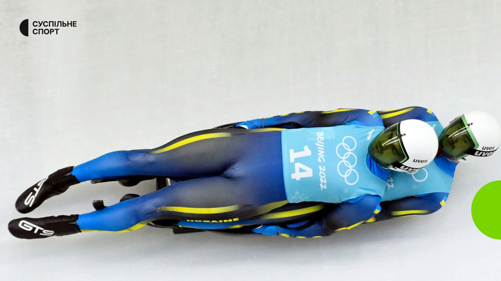
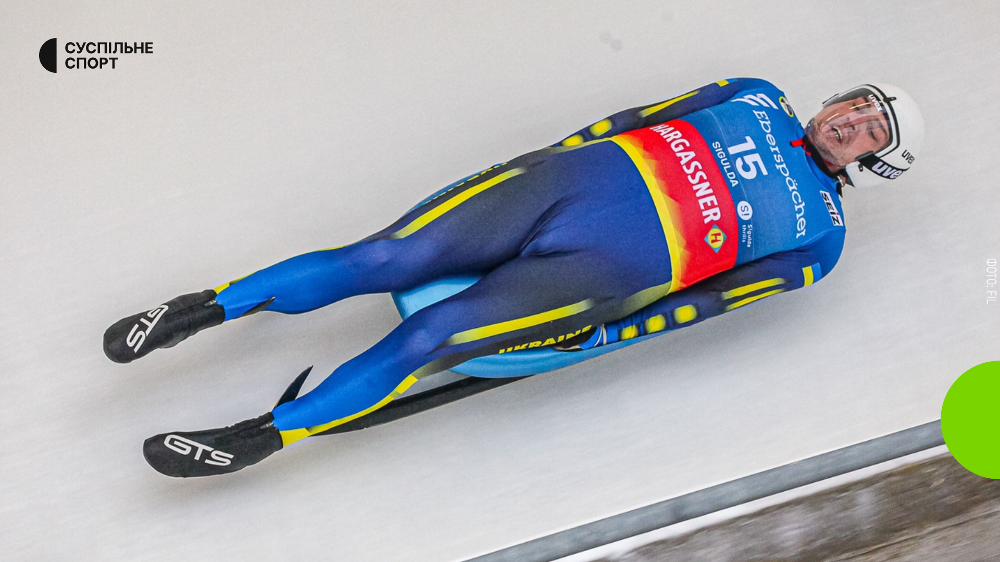
Са́нний спорт — зимовий олімпійський вид спорту, спуск на швидкість спеціально підготовленою трасою на санях. Один або два саночники під час спуску розташовуються на санях горілиць. Управління здійснюється натиском гомілки на полози саней та зміною положення тіла. Спортсмени розвивають швидкість 120—150 км/год. і прискорення до 7 g.
Санний спорт зародився в курортному місті Сент-Моріц у Швейцарії в другій половині 19 ст. завдяки менеджеру готелю Каспару Бадрутту. Бадрутт пропагував активний зимовий відпочинок, надаючи своїм гостям окрім їжі та напоїв, можливість розважитися. Гості, здебільшого англійці, із задоволенням каталися на санках вулицями міста. Незабаром виробилися кілька різних стилів управління санками: долілиць — з цього зародився скелетон, горілиць — санний спорт, і сидячи — бобслей. Щоб уникнути зіткнень з перехожими на вулицях, Бадрутт побудував приблизно в 1870 спеціальну трасу, яка існує ще й досі. Вона використовувалася на двох Олімпіадах. Це одна з небагатьох природних трас, що не залежить від штучного охолодження.
Перші змагання були проведені в 1883 у Швейцарії. В 1913 у Дрездені була організована Internationale Schlittensportverband — Міжнародна федерація санного спорту. У 1935 ця федерація увійшла до складу Міжнародної федерації бобслею і тобогану. Було вирішено, що санний спорт замінить скелетон у програмі Олімпійських ігор. Перший чемпіонат світу відбувся в 1955 в Осло, Норвегія. У 1957 заснована Fédération Internationale de Luge de Course (FIL) — Міжнародна федерація санного спорту.